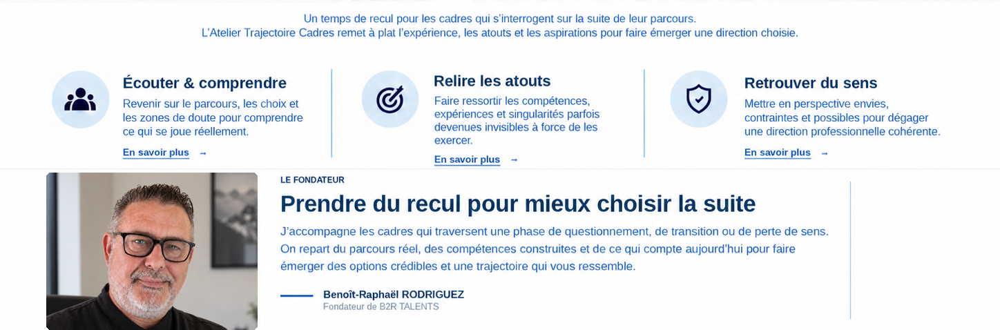

Écouter et comprendre
Revenir sur le parcours, les choix et les zones de doute pour comprendre ce qui se joue réellement.
TRAJECTOIRE • RECUL • COMPRÉHENSION • DIRECTION
Prendre du recul sur son parcours pour retrouver une direction qui a du sens.
Revenir sur le parcours, les choix et les zones de doute pour comprendre ce qui se joue réellement.
Faire ressortir les compétences, expériences et singularités parfois devenues invisibles à force de les exercer.
Mettre en perspective envies, contraintes et possibles pour dégager une direction professionnelle cohérente.
Un premier échange de 30 minutes permet de clarifier le besoin et d’identifier la suite la plus pertinente.

Revenir sur le parcours, les choix et les zones de doute pour comprendre ce qui se joue réellement.
Faire ressortir les compétences, expériences et singularités parfois devenues invisibles à force de les exercer.
Mettre en perspective envies, contraintes et possibles pour dégager une direction professionnelle cohérente.